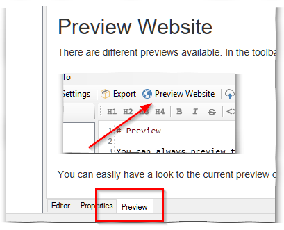
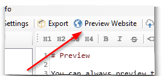

You can always preview the page. The page preview can be found at the bottom of the editor:

In the preview you can see the current formatting of the page.
There are different previews available. In the toolbar you can start the preview of the entire website:

You can easily have a look to the current preview of your website.